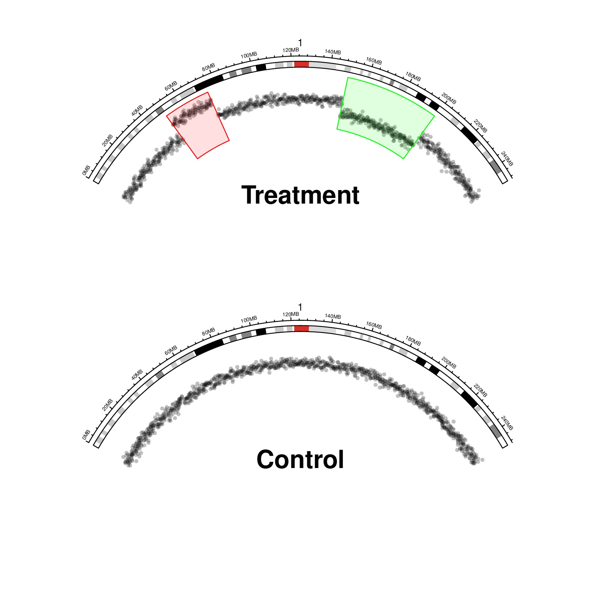

library(circlize)
circos.par("start.degree" = 150, "gap.degree" = c(240), "cell.padding" = c(0, 0, 0, 0))
circos.initializeWithIdeogram(chromosome.index = "chr1")
circos.trackPlotRegion(ylim = c(0, 1), bg.border = NA, track.height = 0.2)
chr.xlim = get.cell.meta.data("xlim", sector.index = "chr1")
# just generate data
xrange = get.cell.meta.data("xrange", sector.index = "chr1")
x = seq(chr.xlim[1], chr.xlim[2], length = 1000)
y = rnorm(1000, 0.5, 0.05)
a1 = 0.2
a2 = a1 + 0.1
a3 = 0.6
a4 = a3 + 0.2
y[x > chr.xlim[1] + xrange*a1 & x < chr.xlim[1] + xrange*a2] = y[x > chr.xlim[1] + xrange*a1 & x < chr.xlim[1] + xrange*a2] + 0.3
y[x > chr.xlim[1] + xrange*a3 & x < chr.xlim[1] + xrange*a4] = y[x > chr.xlim[1] + xrange*a3 & x < chr.xlim[1] + xrange*a4] - 0.2
x = x[y >=0 & y<= 1]
y = y[y >=0 & y<= 1]
circos.points(x, y, col = "#00000040", sector.index = "chr1", pch = 16, cex = 0.7)
circos.rect(chr.xlim[1] + xrange*a1, 0, chr.xlim[1] + xrange*a2, 1, col = "#FF000020", border = "red", sector.index = "chr1")
circos.rect(chr.xlim[1] + xrange*a3, 0, chr.xlim[1] + xrange*a4, 1, col = "#00FF0020", border = "green", sector.index = "chr1")
circos.clear()
text(0, 0.4, "Treatment", cex = 2, font = 2)
par(new = TRUE)
circos.par("start.degree" = 150, "gap.degree" = c(240), "cell.padding" = c(0, 0, 0, 0),
"canvas.ylim" = c(0, 2))
circos.initializeWithIdeogram(chromosome.index = "chr1")
circos.trackPlotRegion(ylim = c(0, 1), bg.border = NA, track.height = 0.2)
chr.xlim = get.cell.meta.data("xlim", sector.index = "chr1")
for(h in c(0, 0.25, 0.5, 0.75, 1)) {
circos.lines(chr.xlim, c(h, h), col = "white", sector.index = "chr1")
}
xrange = get.cell.meta.data("xrange", sector.index = "chr1")
x = seq(chr.xlim[1], chr.xlim[2], length = 1000)
y = rnorm(1000, 0.5, 0.05)
x = x[y >=0 & y<= 1]
y = y[y >=0 & y<= 1]
circos.points(x, y, col = "#00000040", sector.index = "chr1", pch = 16, cex = 0.7)
circos.clear()
text(0, 0.4, "Control", cex = 2, font = 2)
par(new = FALSE)